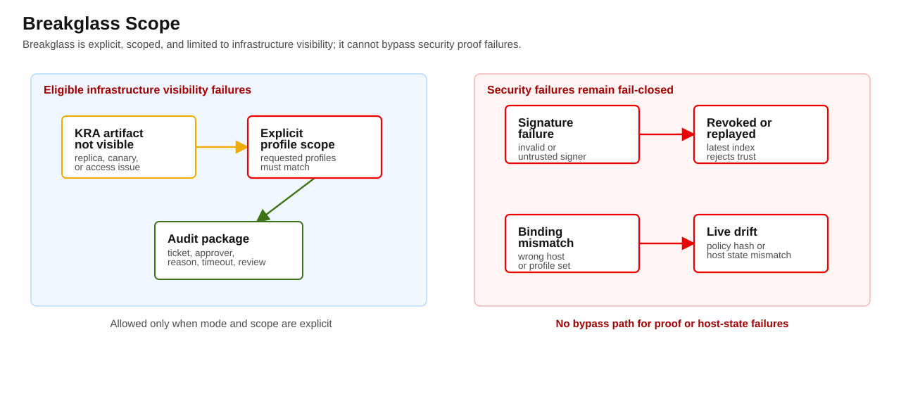

v3 packet
Revocation and Breakglass
This runbook defines how to invalidate trust and how to keep breakglass from weakening host-verification guarantees.


Purpose
This runbook defines how to invalidate trust and how to keep breakglass from weakening host-verification guarantees.
The goal is always fast safe recovery with bounded exception handling.
Use docs/blastwall-v3/operational-guidance.md for the stable-v3 breakglass audit contract and destructive re-capture triggers.
Roles and approvals
- Revocation authority: approves and triggers host/profile attestation invalidation.
- Boundary owner: approves breakglass for infrastructure-only outages.
- Incident response owner: tracks ticketed action and post-event closure.
Revocation sequence
Use this sequence for compromised, drifted, or policy-changed hosts:
- Set revocation intent and identify host + target + profile scope.
- Update latest-generation index for host/profile with revoked state.
- Publish marker state change to
revokedor removeattest_ref. - Mark artifact as revoked/tombstoned according to local data retention policy.
- Trigger inventory refresh.
- Run audit and preflight negative test against host:
- must fail as revoked.
- File host repair plan and create new signed attestation after fix.
Revocation is immediate for the control plane, even if old artifacts remain on disk.
Breakglass rules
Breakglass can only be used for attestation infrastructure failures, not for verification failures.
Allowed infrastructure states:
- attestation envelope not visible from the configured evidence path,
- latest-generation index not visible from the configured evidence path.
The current verifier only allows breakglass for FAIL_ATTESTATION_NOT_VISIBLE and FAIL_INDEX_NOT_VISIBLE. Broader KRA, CA, or signer-service outages must surface as one of those visibility failures before breakglass can pass.
Not allowed for breakglass:
- invalid signature,
- untrusted signer,
- host policy hash drift,
- binding mismatch,
- replayed generation,
- revoked marker,
- expired attestation.
Breakglass execution
- Create incident ticket with hostname, time window, and expected expiry.
- Set explicit breakglass scope:
- host-specific,
- profile-specific and matching the requested profile set,
- time-limited,
- reason code and owner.
- Re-run preflight with breakglass flag enabled.
- Continue only if infra-check failures are the sole cause.
- Auto-expire at timeout and require explicit extension.
- Produce audit artifacts (preflight + audit output) showing:
- infra-only failure,
- no host-verification exceptions were bypassed.
Required evidence
For every breakglass use, collect:
- AAP run ID,
- operator and approval ID,
- impacted hosts/profiles,
- failure state(s),
- start/end timestamp,
- command outputs and remediation outcome.
If host verification and infrastructure failures were both present, do not use breakglass.
Return condition
Breakglass is an emergency stopgap. It must end when:
- KRA + signer checks recover,
- normal mode checks pass in at least one complete preflight cycle,
- the exception window expires or is formally renewed.